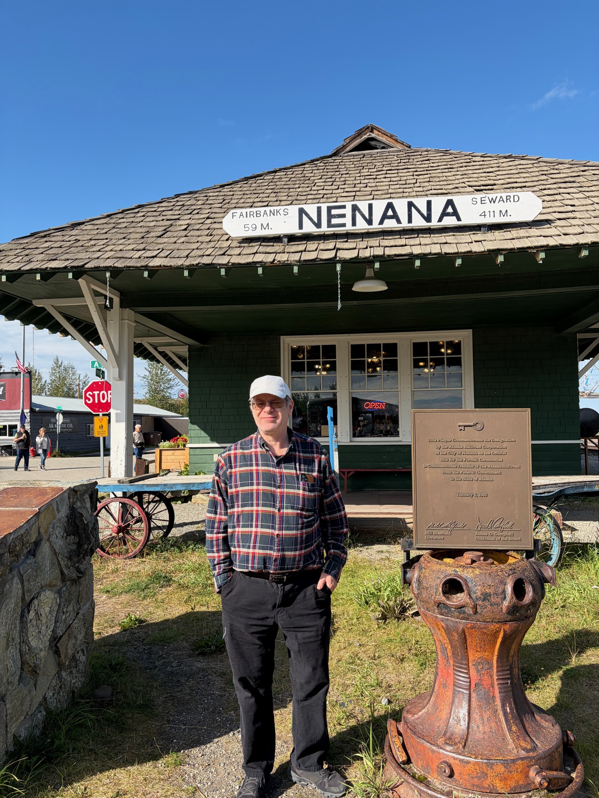
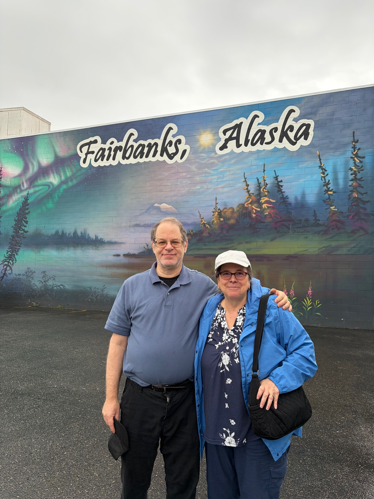
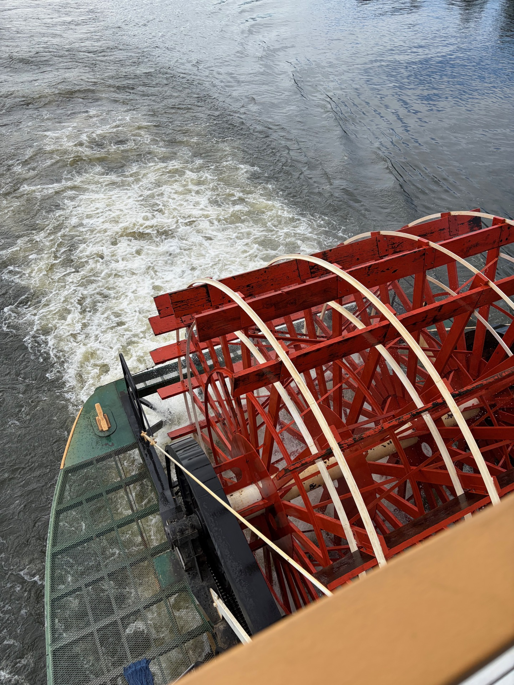
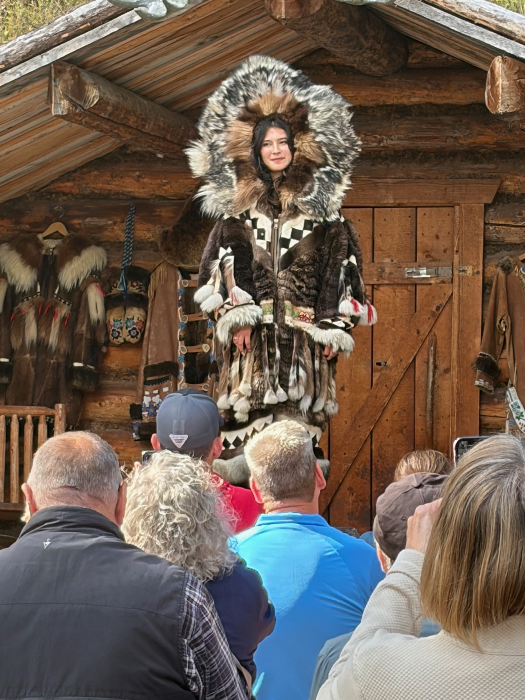
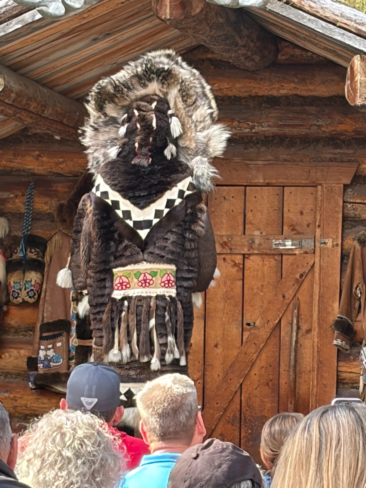
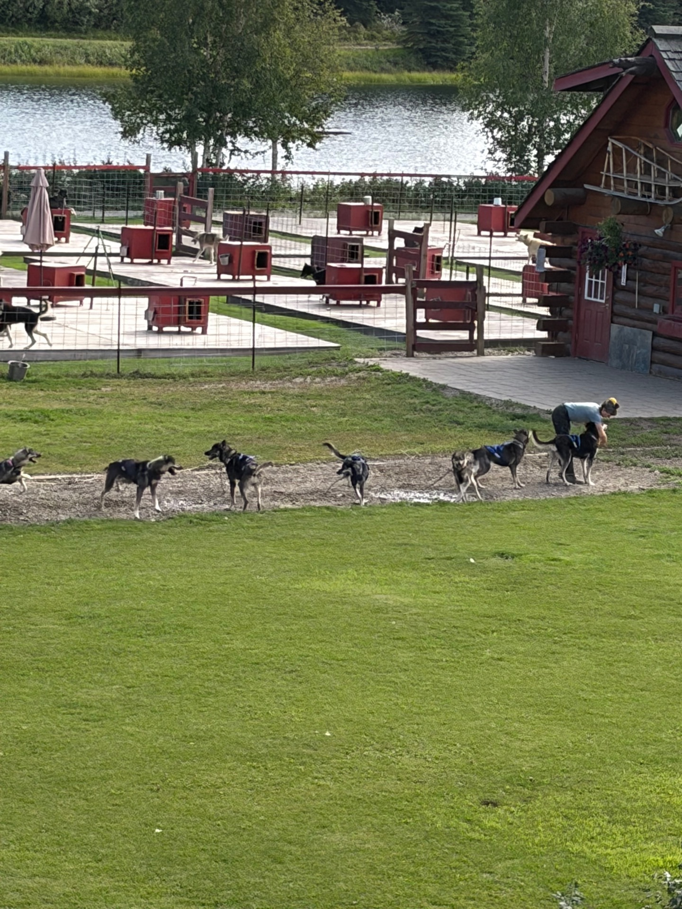
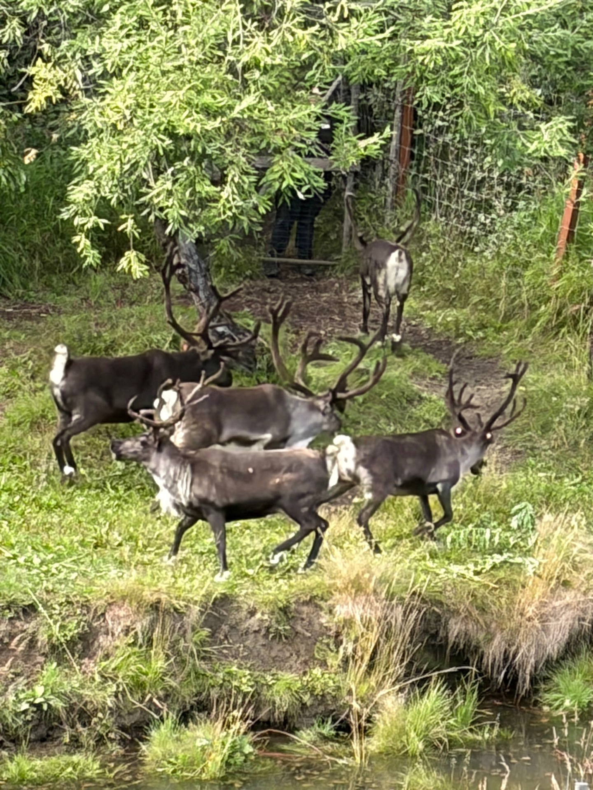
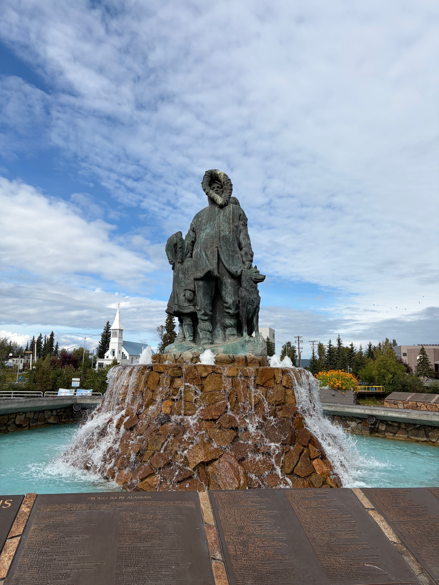
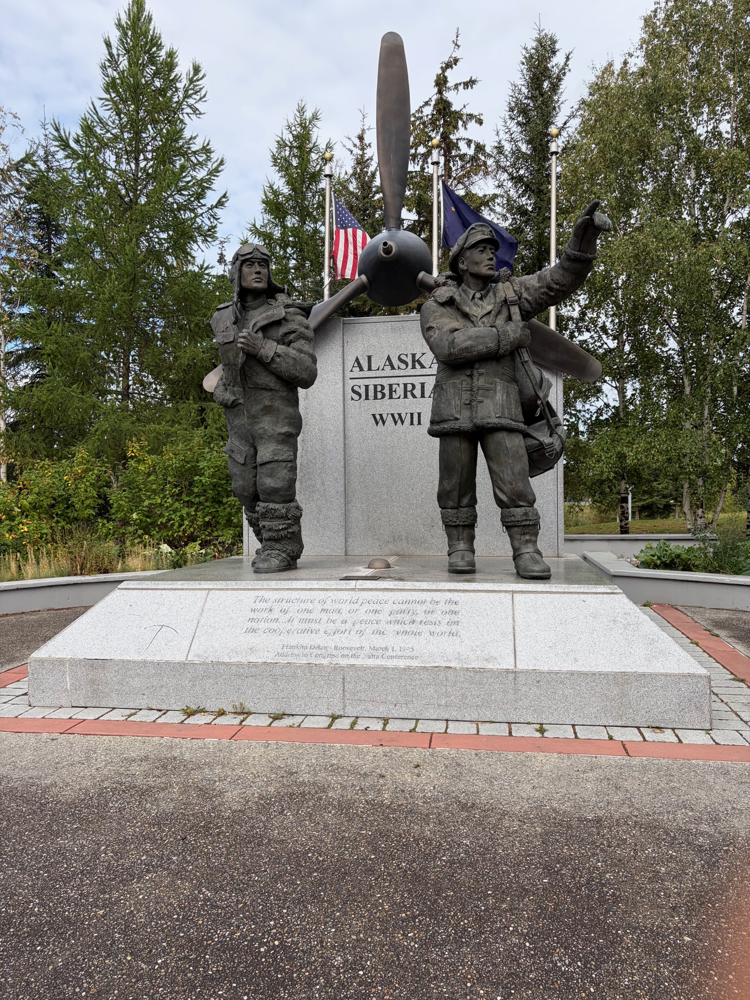
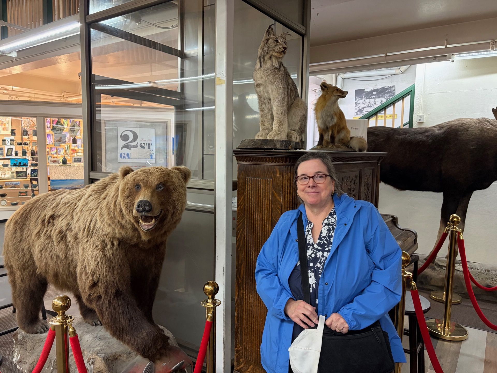

The journey to Fairbanks passed through Nenana — a small riverside city with a long history as a supply hub for the Alaskan interior, where the Nenana River meets the Tanana. It is a classic Alaska boom-and-bust story: when the oil pipeline was being built in the 1970s and 80s, Nenana swelled to nearly a thousand residents, drawn by the work and the wages. When the pipeline was finished, most of them left. Today a couple of hundred people remain, holding the place together in the way that small Alaskan towns do — stubbornly, and with no particular apology for their smallness.

The final day of the adventure brought the Charmings to Fairbanks — the Golden Heart of Alaska, as it is known, and the name is earned twice over. It sits in the geographic middle of the state, and in 1901 gold was discovered there, touching off a rush that put Fairbanks on the map and shaped everything that followed. It sits deep in the interior, just 140 miles south of the Arctic Circle, far from the moderating influence of the sea. In winter it is famous for the northern lights — the aurora blazes over Fairbanks on dark nights with a regularity that draws visitors from around the world. It is also known for cold that reaches sixty below. The Charmings arrived in August, when it was perfectly pleasant, and saw neither aurora nor frostbite. They chose their timing wisely.
The Riverboat Cruise — Chena River Stop

The centerpiece of the Fairbanks day was a riverboat cruise on the Chena River — a leisurely float past the riverbanks and their cargo of statues, wildlife, history, and surprises. The boat was the kind of vessel that feels like it belongs to another era, which in many ways it does.
Avery & the $35,000 Outfit
One of the highlights of the tour was Avery, a guide who demonstrated traditional Alaska Native dress — and casually mentioned that the outfit she was wearing was worth thirty-five thousand dollars. The Charmings listened very carefully after that. A dress that complex and beautiful takes nearly two years to make, every bead and stitch placed by hand. It also happened to be Avery's eighteenth birthday, which she was celebrating by wearing thirty-five thousand dollars worth of traditional regalia and explaining it to tourists on a riverboat. As eighteenth birthdays go, that is a rather good one.


Reindeer & Iditarod Dogs


The tour also introduced the Charmings to reindeer — real ones, not the decorative variety — and to a team of Iditarod sled dogs. Unlike the powerful working dogs of Denali Park, the Iditarod dogs were bred for an entirely different purpose: speed over endurance, lean and quick, made to cover the thousand miles of the great race from Anchorage to Nome. Different dogs for a different kind of wild.
The Riverbanks & the Cultural Museum


The statues along the riverbank stood sentinel as the boat passed — figures from Alaska's history and culture, rendered in stone and bronze, watching the river go by as they have for years. The cruise also included a stop at the Alaskan Cultural Museum, which turned out to be very good indeed: a thoughtful and well-presented collection of Alaska Native art, history, and tradition that gave the Charmings a much richer sense of the people who have called this land home for thousands of years.
The Mall

A visit to the local mall revealed one of Fairbanks' more distinctive features — an impressive collection of taxidermied animals on display throughout the shopping center. Bears, wolves, moose, and more, all frozen in dignified poses between the shops. Snow Charming posed for a photograph with the locals, as one does.
And so the adventure came to its end — as all adventures must, eventually. The Charmings flew home from the edge of the world, carrying with them glaciers and bears and sled dogs and one very memorable birthday outfit. Stories end. That is what makes them stories. But the world keeps turning, and there are always more roads, more mountains, more wonders waiting just beyond the next horizon. Twenty-five years of happily ever after — and the story is far from over.
If this story moved you, we'd love to hear from you.